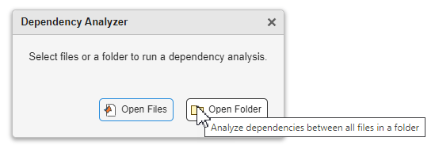
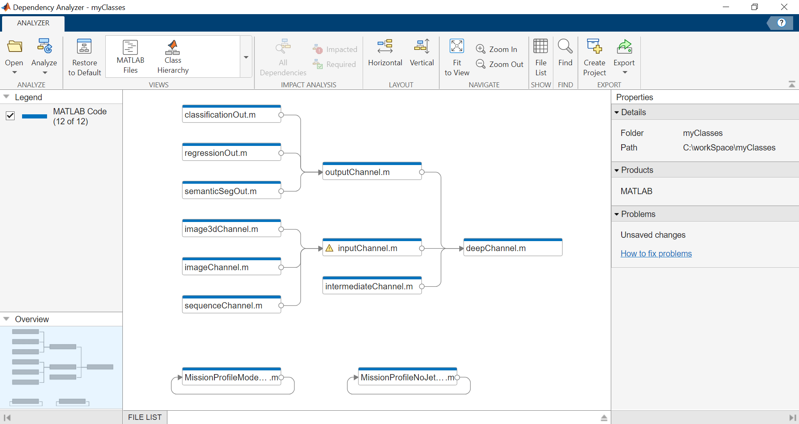
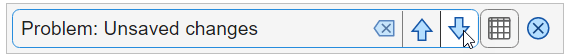
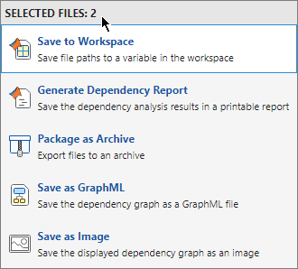
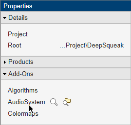
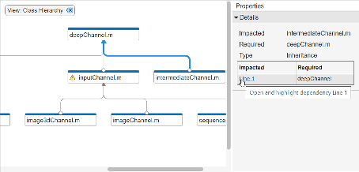
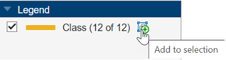

Dependency Analyzer
Visualize dependencies, find required files, and assess the impact of changes
Since R2023a
Description
The Dependency Analyzer app is an interactive tool for visualizing and analyzing dependencies among files.
Every design, whether it is a folder, a Simulink® model, or a project, requires a set of files and products to run successfully. Dependencies include data files, model references, linked libraries, MATLAB® and C/C++ code, Stateflow® charts, and requirements documents.
Use the Dependency Analyzer to perform a dependency analysis. You can run a dependency analysis at any point in your workflow. In a collaborative environment, you typically check dependencies:
When you set up or explore a design for the first time
When you run tests to validate changes to your code
Before you submit a version of your code to source control
Before you share your code
With the Dependency Analyzer, you can:
Find required products and add-ons.
Investigate and resolve problems.
Perform an impact analysis to determine the impact of changing particular files.
Export the dependency analysis results.
Open the Dependency Analyzer App
MATLAB toolstrip: On the Apps tab, under MATLAB, click the Dependency Analyzer icon
 .
.For instructions on how to run a dependency analysis on a folder or a file, see Dependency Analysis for Folders and Files.
Project toolstrip: On the Project tab, click the down arrow to expand the Tools gallery. Under Apps, click Dependency Analyzer.
Perform a project dependency analysis to explore the dependency graph using source control and project-specific views. For more details, see Analyze Project Dependencies. For projects that contain models, Dependency Analyzer provides model-specific views. See Explore the Dependency Graph, Views, and Filters (Simulink).
Simulink Editor: On the Modeling tab, on the far right of the Design section, click the arrow. Under Dependencies, click Dependency Analyzer.
Perform a dependency analysis to examine models, subsystems, and libraries referenced directly or indirectly by the model using model-specific views. For more details, see Analyze Model Dependencies (Simulink).
MATLAB Command Window: Enter
dependencyAnalyzer.For projects, you can use the
updateDependenciesfunction to perform a dependency analysis programmatically.
Examples
Open the Dependency Analyzer. In MATLAB, on the Apps tab, under MATLAB, click the Dependency Analyzer icon
.
Select the files or folder you want to analyze.
To analyze dependencies between all files in a folder, click Open Folder and select the folder you want to analyze. If the folder you selected is not on the search path, MATLAB changes the current folder to the selected folder.
To analyze the dependencies of a set of files in a folder, click Open Files and select the files you want to analyze.
The dependency graph shows:
How files relate to each other. Each item in the graph represents a file and each arrow represents a dependency.
Relationships between source and derived files.
Required products in the Properties panel under Products. Point to a product, such as
MATLAB, and click the magnifying glass icon . The graph highlights the files that use this
product.
. The graph highlights the files that use this
product.Warnings in the Properties panel under Problems. Common problems include missing files, files with syntax errors, files with unsaved changes, and out-of-date derived files. Point to a problem, such as
Unsaved changes, and click the magnifying glass icon. The graph highlights the files with this
problem.

Explore the different views in the Views section of the Dependency Analyzer toolstrip to investigate your files dependencies.
The MATLAB Files view shows only MATLAB files (such as
.m,.mlx,.p,.mlapp,.fig,.mat, and.mex) in the view and colors them by type.The Class Hierarchy view shows the class inheritance graph and colors the files by type (class, enumeration class, or abstract class). If the class is not on the search path, the Dependency Analyzer cannot determine the class type.
If the folder you are analyzing is a project, for instructions on how to use project-specific views, see Analyze Project Dependencies.
Tip
To package, share, or put your design under source control, create a project from your folder. For more details, see Create Project from Existing Folder. Perform a project dependency analysis to explore the dependency graph using source control and project-specific views.
If the file you are analyzing is a Simulink model, for instructions on how to use model-specific views, see Analyze Model Dependencies (Simulink).
Tip
To package, share, or put your design under source control, create a project from your model. For more details, see Create Project from Model (Simulink). Perform a project dependency analysis to explore the dependency graph using source control and project-specific views.
Use the graph to investigate problem files graphically.
In the Properties pane, in the Problems section, point to a problem, such as
Unsaved changes, and click the magnifying glass icon. The graph highlights the files with this
problem.To examine these files, use the arrows in the search box (for example, Problem:
Unsaved changes).
To undo the highlighting, close the search box.
To see more information about a problem file, select the file in the graph. In the Properties pane, in the Problems section, you can see details including the path, type, and problems for this file.
For example, if a file has unsaved changes, save the file in the MATLAB editor. For more details on how to fix problems, see Resolve Problems.
To update the graph and the Problems list, click Analyze.
Export all the files displayed in the dependency graph.
Click the graph background to clear the selection on all files.
In the Export section, click Export. Select from these options:
Save to Workspace — Save the file paths to a variable in the workspace.
Generate Dependency Report — Save the dependency analysis results in a printable report (HTML, Word, or PDF).
Package as Archive — Export the files in the graph as an archive.
Save as GraphML — Save the dependency analysis results as a GraphML file.
Save as Image — Save the displayed dependency graph as an image.
You can also export a subset of files in the graph. Select the files, then click Export. The menu displays how many files are selected. The Dependency Analyzer exports only the selected files.

Note
To ensure the archive you share does not have missing files, when you use Package as Archive, the Dependency Analyzer includes the selected files and all their dependencies in the archive.
When collaborating on a project under source control, a branch merge can lead to conflicted files. For a smoother merge, you can determine the optimal order in which to resolve conflicts by running a dependency analysis. Conflicts in files that are used by other files should be resolved first. Conflicts in files that do not have dependencies do not affect other files, so the conflict resolve order does not matter.
Note
If the project dependency graph contains circular dependencies, there might not be an optimal order in which to resolve conflicts.
If you have not yet started using source control in MATLAB, see Source Control.
This example project has 5 conflicted files.

To determine the optimal order in which to resolve conflicts, use the Source Control view of the dependency graph to see which conflicted files are sued by other conflicted files. If the files have conflict markers, the Dependency Analyzer might report syntax errors and skip analyze the conflicted files.
If you have complicated file dependencies, print the order of resolving conflicts by running the
getProjectResolveOrderfunction.function fileOrder = getProjectResolveOrder() import matlab.sourcecontrol.Status; p = currentProject; conflictingFiles = p.Files([p.Files.SourceControlStatus] == Status.Conflicted); updateDependencies(p); graph = p.Dependencies; if ~isdag(graph) error("Unable to recommend an optimal resolve order. The dependency graph contains circular dependencies.") end topologicalOrder = toposort(graph); topologicalFiles = graph.Nodes.Name(topologicalOrder); fileIndices = ismember(topologicalFiles, [conflictingFiles.Path]); files = flip(topologicalFiles(fileIndices)); nodependencyFiles = setdiff(cellstr([conflictingFiles.Path])',files); fileOrder = [files;nodependencyFiles]; end
getProjectResolveOrder ans = 5×1 cell array {'C:\workSpace\examples\TimesTableApp\source\timesTableGame.m' } {'C:\workSpace\examples\TimesTableApp\source\timestable.mlapp' } {'C:\workSpace\examples\TimesTableApp\tests\tAnswerIsCorrect.m' } {'C:\workSpace\examples\TimesTableApp\utilities\openRequirementsDocument.m'} {'C:\workSpace\examples\TimesTableApp\utilities\runTheseTests.m' }Resolve conflicts according to the listed order. For more details, see Resolve Git Conflicts and Resolve Conflicts in Models Under Source Control (Simulink).
Related Examples
Dependency Analyzer Scope and Limitations
After you run the first dependency analysis for your project, folder, or file, subsequent analyses incrementally update the results. The Dependency Analyzer determines which files changed since the last analysis and updates the dependency data for those files.
Analysis Scope
The Dependency Analyzer identifies the required files and add-ons for your project,
folder, or file. The analysis covers a wide range of dependencies, including model references,
subsystem references, linked libraries, MATLAB and C/C++ code, Stateflow charts, data files, S-functions, and requirements documents.
When the Dependency Analyzer encounters MATLAB code, such as in a model or block callback, or in a .m file
S-function, it attempts to identify the files it references.
For files under the MATLAB root folder, the Dependency Analyzer only shows required products. It does not analyze dependencies.
The Dependency Analyzer identifies dependencies inside user-defined add-ons and dependencies that were introduced by code generation or by MATLAB code in model parameters. These options are off by default because they can be time consuming for large designs.
To specify the scope of the analysis, in the Dependency Analyzer toolstrip, click Analyze and select one or more of the following options. If you change the analysis options, the next time your run a dependency analysis a full analysis runs automatically.
| Option | Default | Description |
|---|---|---|
| Referenced Projects | Off | Analyze dependencies inside referenced projects. The dependency graph shows all files and their dependencies in the top-level and all the referenced projects. |
| C/C++ Code | On | Analyze dependencies introduced by C/C++ code files. |
| Add-Ons | Off | Analyze dependencies inside add-ons. In the Properties pane, the Add-Ons section lists the required add-ons. To highlight or list the files that require an add-on, click the icons next to the add-on.  |
| Model Parameters | Off | Analyze dependencies introduced by MATLAB code in model block parameters. |
| Generated Code Traceability | Off | Analyze dependencies introduced by code generated from a model. |
Analysis Limitations
The Dependency Analyzer has limitations specific to MATLAB code analysis:
The Dependency Analyzer only identifies function input arguments when they are literal character vectors or strings:
load("mydatafile") load mydatafile
If you define a file name as a variable and pass it to a function, the Dependency Analyzer is unable to identify the dependency. In the following example, since the code is not executed, the Dependency Analyzer does not have the value of
str. The Dependency Analyzer might report a missing dependency.This limitation extends to functions similar tostr = "mydatafile"; load(str);load, such asfopen,xlsread,importdata,dlmread,eval, orimread.The Dependency Analyzer does not always determine type automatically. Depending on the way you call an object method, the Dependency Analyzer might confuse a method with a function and report a missing dependency.
In MATLAB, you can call an object method in two different ways. For example, for an object
p, you can call the methodaddFileusing the function notation:or by using the dot notation:p = currentProject; addFile(p,"myfile");If you do not declare the type ofp = currentProject; p.addFile("myfile");pexplicitly, the Dependency Analyzer might confuse a method call that uses a function notation with a function call. The analyzer reportsaddFileas a missing dependency.To work around this limitation, use dot notation to call a method or use arguments to explicitly declare the variable type in your function:
function myfunction(p) arguments p matlab.project.Project end addFile(p,"myfile"); end
The Dependency Analyzer does not report a dependency to a class that is referenced using a method call.
When analyzing a file, the Dependency Analyzer does not consider the context in which it is called. When a file
Acalls a fileB, the Dependency Analyzer does not know about data used inBbut defined inA. The Dependency Analyzer reports this data as a missing file. To work around this limitation, pass this data explicitly using function input arguments.For example, when you analyze a Simulink subsystem that is referenced in a model that links to a data dictionary and the subsystem uses an enumeration that you define in the data dictionary, the analysis cannot access the enumeration and reports this data as a missing file.
The Dependency Analyzer might not report certain blocksets required by a model.
The Dependency Analyzer is unable to detect blocksets that do not introduce dependencies on any files, such as Fixed-Point Designer™.
To include dependencies that the analysis cannot detect, add the file that introduces the dependency to your project. To create a project from your model, see Create Project from Model (Simulink).
The Dependency Analyzer might not detect required support packages. It lists required add-ons, including apps and toolboxes.
The Dependency Analyzer might not report dependencies for dynamic content in masked blocks.
Based on the parameters of the masked blocks, dynamic masks can modify the masked subsystem and change the block dependencies. If the dynamic mask is in a library, the Dependency Analyzer is unable to detect the dynamic changes.
The Dependency Analyzer does not support Simulink functions called from MATLAB function blocks.
Some MathWorks® products and add-ons share code and Simulink libraries. The Dependency Analyzer might report dependencies on all of them.
To investigate where shared code is used, in the Properties panel, in the Products section, point to a product under Shared Functionalities Among: and click the search folder icon .
The Dependency Analyzer analyzes project code without evaluating its content, therefore:
The Dependency Analyzer does not add global variables in executed functions.
The Dependency Analyzer analyzes code inside logic statements, even if it is not executed. In the following example, the code is not executed but the Dependency Analyzer reports a missing dependency on Simulink.
if false load_system(vdp) end
Tips
Use the clickable arrows to investigate further dependencies between files.

Use the check boxes in the Legend pane to filter out a group of files.
Use the Add to selection button in the Legend panel to select all files in the graph with the specified legend.

Create a project from the dependency graph. Projects enable you to package, share, or put your design under source control.
To create a project from all the files displayed in the dependency graph, click the graph background. This action clears all selected files.
In the Dependency Analyzer toolstrip, in the Export section, click Create Project.
In the Create Project window, click OK.
The Dependency Analyzer creates a project and reloads the graph.
You can also create a project from a subset of files in the graph. Select the files, then click Create Project. The Dependency Analyzer includes the selected files and all their dependencies in the project.